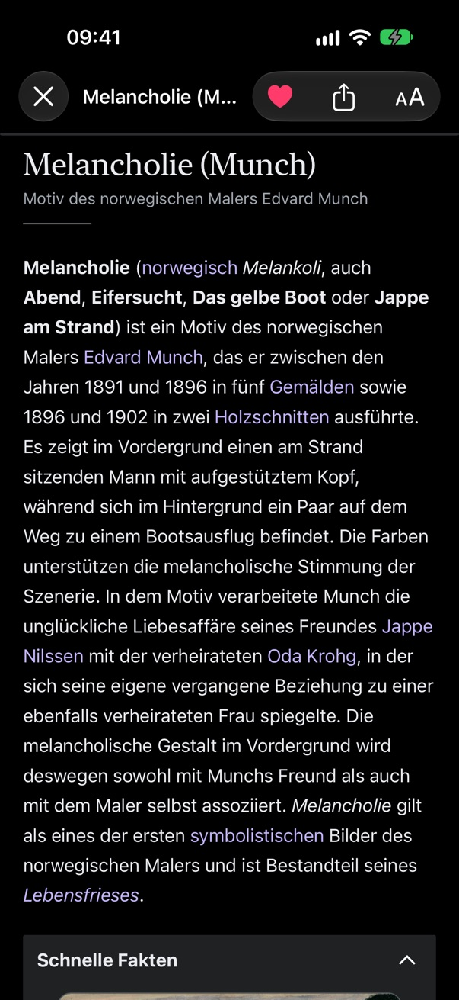
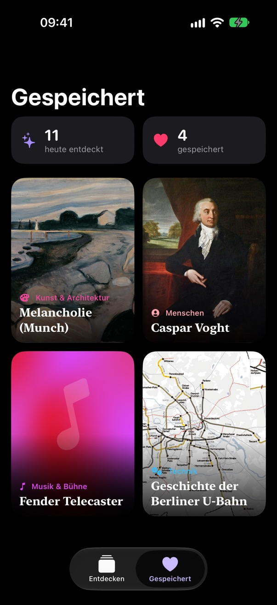
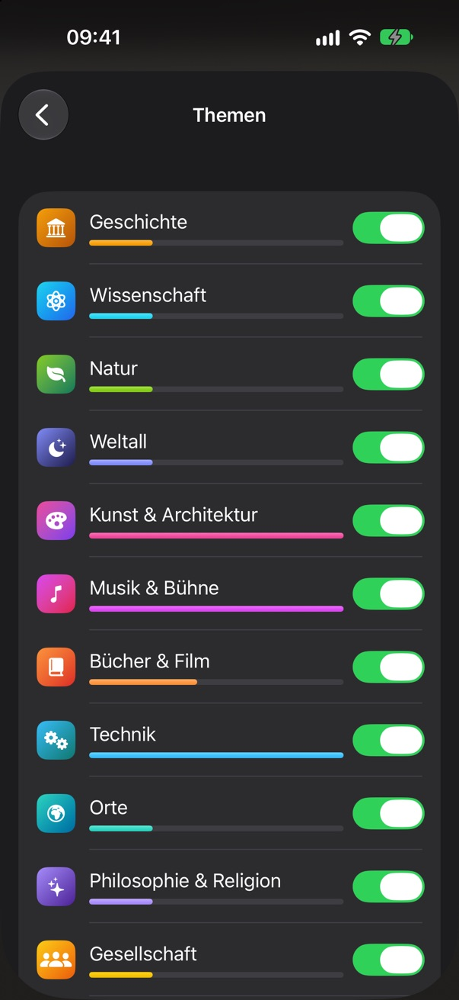

Scrollen. Aber diesmal bleibt was hängen.
Quriosa ist ein endloser Feed wie in deinen Lieblings-Video-Apps, nur mit spannenden Wikipedia-Artikeln statt Kurzvideos. Wischen, staunen, weiterlesen.
Kostenlos · ohne In-App-Käufe · für iPhone mit iOS 26
So funktioniert's
Ein Artikel pro Screen. Endlos swipen
Großes Bild, das Wichtigste auf einen Blick. Interessiert dich etwas, tippst du auf „Weiterlesen“. Wenn nicht, wischst du einfach weiter.
Nur das Beste
Ausgezeichnete Artikel statt Zufallsfunde
Dein Feed besteht vor allem aus Artikeln, die die Wikipedia-Community als exzellent oder lesenswert ausgezeichnet hat. Dazwischen warten Überraschungen und jeden Tag der Artikel des Tages.
- Wie viel Zufall du willst, stellst du selbst ein
- Lesezeit auf einen Blick
- Deutsch oder Englisch

Lesen ohne Ablenkung
Neugierig? Einfach weiterlesen.
Ganze Artikel öffnen sich direkt in der App, in einer ruhigen Leseansicht im Stil von Quriosa. Ohne Werbebanner, ohne Pop-ups, ohne Umweg über den Browser.
- Schriftgröße nach Wunsch
- Links führen zum nächsten rabbit hole

Deine Sammlung
Speichern und offline lesen
Ein Doppeltipp, und der Artikel landet in deiner Sammlung. Gespeicherte Artikel kannst du durchsuchen und auch ohne Internet lesen, im Flugzeug genauso wie in der U-Bahn.

Personalisiert, aber privat
Dein Feed lernt dich kennen
Quriosa merkt sich, was du speicherst, liest und überspringst, und zeigt dir mehr davon. Damit es nicht einseitig wird, mischen wir immer wieder Neues unter. Und alles passiert nur auf deinem iPhone.
- „Weniger davon“ mit einem Tipp
- Themen einzeln ausblenden
15 Themen
Von Weltall bis Essen & Trinken
Was dich nicht interessiert, blendest du aus. Alles andere mischt Quriosa zu deinem persönlichen Feed.
Privatsphäre
Kein Konto. Keine Werbung. Kein Tracking.
App öffnen und loslegen. Was Quriosa über deine Interessen lernt, verlässt nie dein iPhone.
Kein Konto
Keine Anmeldung, keine E-Mail-Adresse, kein Onboarding. Du öffnest die App und bist sofort drin.
Lernt nur auf deinem Gerät
Deine Interessen, Einstellungen und gespeicherten Artikel bleiben auf deinem iPhone. Es gibt keinen Server von uns.
Keine Werbung, kein Tracking
Keine Analyse-Tools, keine Werbenetzwerke, keine Drittanbieter-Bibliotheken. Nur du und die Artikel.
Fragen
Gut zu wissen
Woher kommen die Artikel?
Alle Inhalte stammen von den Autorinnen und Autoren der Wikipedia und stehen unter der Lizenz CC BY-SA 4.0. Quriosa lädt sie direkt von Wikipedia. Quriosa ist ein unabhängiges Projekt und nicht mit der Wikimedia Foundation verbunden.
Welche Geräte werden unterstützt?
Quriosa läuft auf iPhones mit iOS 26 oder neuer.
In welchen Sprachen gibt es Quriosa?
Der Feed kommt wahlweise aus der deutschen oder der englischen Wikipedia. Du wechselst in den Einstellungen.
Was kostet Quriosa?
Nichts. Quriosa ist kostenlos im App Store erhältlich, ohne In-App-Käufe, ohne Abo und ohne Werbung.
Was passiert mit meinen Daten?
Quriosa speichert alles lokal auf deinem iPhone. Um Artikel und Bilder zu laden, verbindet sich die App direkt mit Wikipedia. Details findest du in der Datenschutzerklärung.
Bereit für dein nächstes rabbit hole?
Lade Quriosa jetzt kostenlos im App Store und fang an zu scrollen. Feedback und Ideen nehmen wir gern per E-Mail entgegen.
Im App Store laden